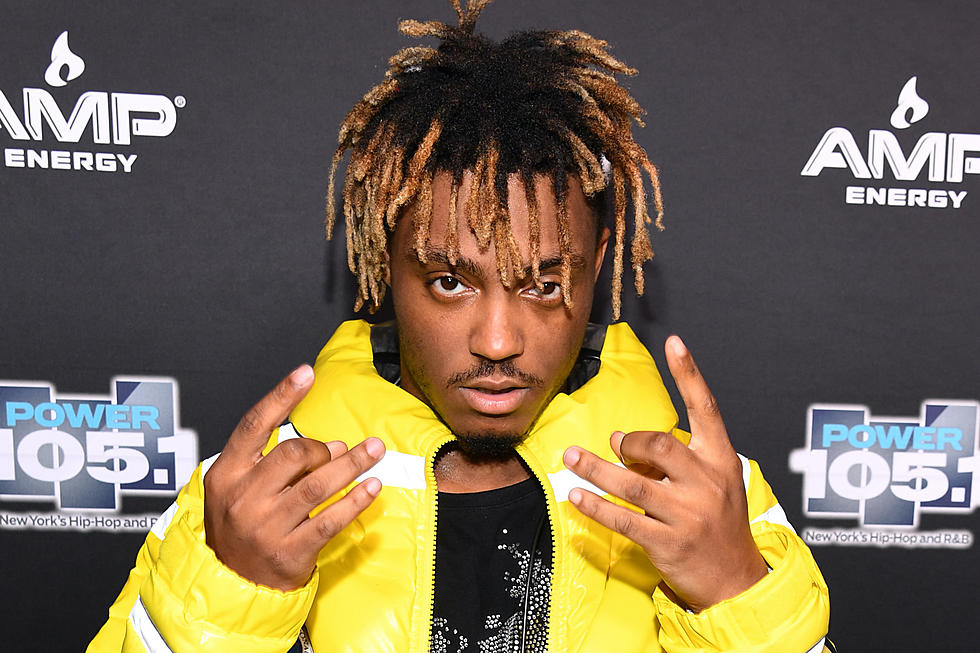
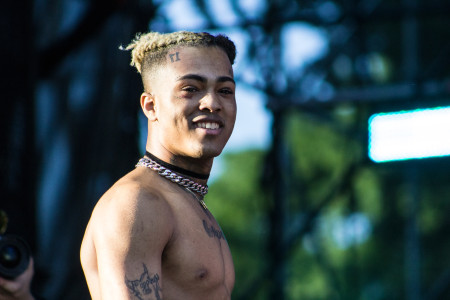
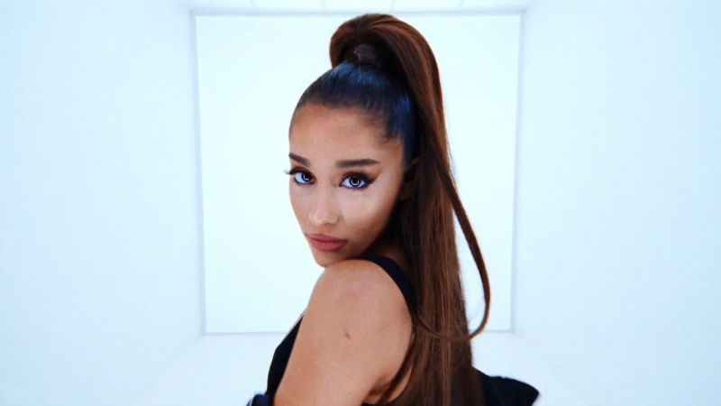

Music I Like
Here are some of the mames i like and a little about them:
- Juice Wrld:
Jarad Anthony Higgins (December 2, 1998 – December 8, 2019),
known professionally as Juice WRLD (pronounced "Juice World"),
was an American rapper, singer, and songwriter. Born in Chicago, Illinois,
he was best known for his hit singles "All Girls Are the Same" and "Lucid Dreams"
which helped him gain a recording contract with Lil Bibby's Grade A Productions and Interscope Records.

His music
- XXXTentacion:
Jahseh Dwayne Ricardo Onfroy,
known professionally as XXXTentacion, was an American rapper, singer and songwriter.
Although a controversial figure within the music industry, XXXTentacion has been regarded to have left behind
"a huge musical footprint" due to his impact on his young fanbase and his popularity during his short career.

his music
- ariana grande:
Ariana Grande-Butera is an American singer, songwriter, and actress.
Born in Boca Raton, Florida, Grande began her career in 2008 in the Broadway musical 13.
She rose to prominence for her role as Cat Valentine in the Nickelodeon television series Victorious
and in its spin-off, Sam & Cat.

her music
Back to home